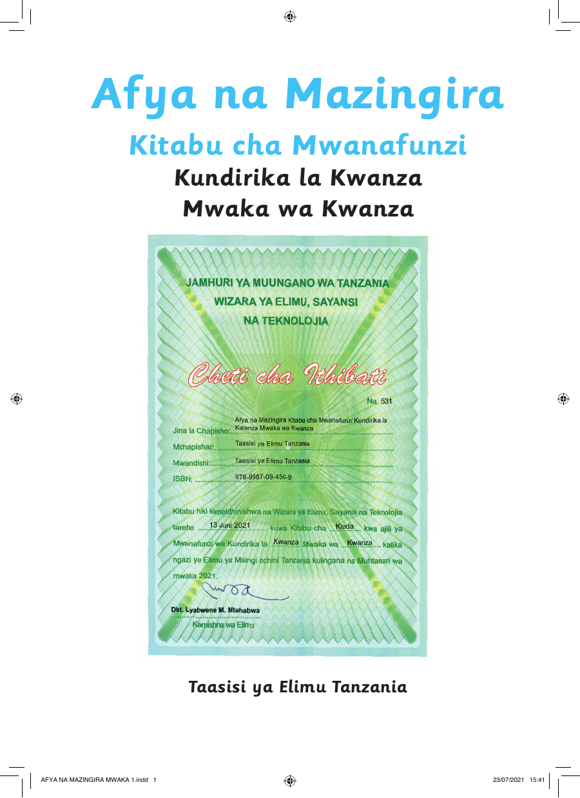

 Afya na Mazingira Kitabu cha Mwanafunzi Kundirika la Kwanza Mwaka wa Kwanza Taasisi ya Elimu Tanzania AFYA NA MAZINGIRA MWAKA 1.indd 1 23/07/2021 15:41 Afya na Mazingira Kitabu cha Mwanafunzi Kundirika la Kwanza Mwaka wa Kwanza Taasisi ya Elimu Tanzania AFYA NA MAZINGIRA MWAKA 1.indd 1 23/07/2021 15:41